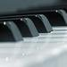
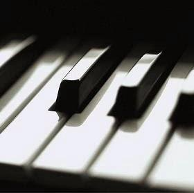

Aline Barros
Soube Que Me Amava
435.385 exibições
Tom: F#
Intro: B E/B B B/D# E
B E B
Desde o princípio quando com você sonhei
B/D# E F#
Desde o momento em que os meus olhos levantei
G#m F# E
Desde esse dia em que sozinha eu estava
B/D# C#m F# B
Foi quando o seu olhar no meu se encontrou
B/D# E G#m F#
Soube que amava, entendi
G#m E
Soube que buscava mais de mim
B/D# C#m7 F#/A#
Que muito tempo me esperou, então cheguei
B/D# E G#m F#
Soube que amava, entendi
G#m E B/D# C#m7
Eu já não podia resistir, e com um beijo e com amor
F#4 F# B
Te entreguei meu coração, me apaixonei
( B E/B F#/A# )
B B/D# E
E quando longe eu estava
F# B B/D# E
Percebi que o teu carinho e o teu amor
F# G#m
Eram pra mim como um sussurro
F# E
Ouvi tua voz no meu silêncio
B/D# C#m7 F# B
Me chamando cada dia mais pra ti
B/D# E G#m F#
Soube que amava, entendi
G#m E
Soube que buscava mais de mim
B/D# C#m7 C#m7/B F#/A#
Que muito tempo me esperou, então cheguei
B/D# E G#m F#
Soube que amava, entendi
G#m B/D# E B/D# C#m7
Eu já não podia resistir, e com um beijo e com amor
F# G#m
Te entreguei meu coração, me apaixonei
Solo: G#m7 F#/A# B B/D# C#m E F# G#m F#/Bb G#/C Bb/D
E|---------------------------------------------6-7----------7--9--6-----9------------------------------------------13b|
B|-----------------------------------------9---------9-----------------7------11s-13---------9--13b--13—11------------|
G|----------------------b8--6-4-6---6 ---------------8----------------------------------------------------------------|
D|--4s-6-----6-8-9----------------------------------------------------------------------13----------------------------|
A|----------9---------------------------------------------------------------------------------------------------------|
E|--------------------------------------------------------------------------------------------------------------------|
C F Am7 G
Soube que amava, entendi
Am7 C F
Soube que buscava mais de mim
C/E Dm7 G/B
Que muito tempo me esperou, então cheguei
C/E F Am7 G
Soube que amava, entendi
G/F C/E G/B C F C/E Dm7
Eu já não podia resistir, e com um beijo e com amor
G4 C F/C F C
Te entreguei meu coração, me apaixoneiComposição: Marcela GandaraColaboração e revisão:
- 
- +4
Comentários 9
- mayara: Em 19/04/2014 18:53
muito linda essa musica
- Mateus Eduardo: Em 20/12/2013 22:29
aff vei ...kd a cifra cheia de enfeites .. porra caralho
- mc_ts: Em 03/12/2012 17:39
é bom pra cantar em casamentos!!! uhhh (casório chegando...)
- samuka: Em 28/08/2012 23:48
Música da Marcela Gandara!
- laurikazinha: Em 16/08/2011 13:10
eu amo d+ essa musica
- _jessy_: Em 16/08/2011 11:59
Eu amo essa música, realmente é muto linda.
- dnc_design: Em 03/06/2011 13:55
Adorei a música Amore e realmente é a nossa cara
- nAGIA: Em 03/04/2011 03:09
Eu amo essa canção!!!!!11
- cris: Em 24/09/2011 13:55
é muito linda essa musica
- cris: Em 24/09/2011 13:55
conseguiu tocar?
- 
- •••
covers
envie o seuCapítulos
2 versões de violão
dificuldade
exibições contribuição e correção
2 versões de guitarra
dificuldade
exibições contribuição e correção
2 versões de cavaco
dificuldade
exibições contribuição e correção
2 versões de teclado
dificuldade
exibições contribuição e correção
3 versões de partiturasformatodownloadscontribuição
play/pausefechar
subir/descer
velocidade
- 1
- 2
- 3
- 4
- 5
- 6
- 7
- 8
- 9
- 10
- 11
- 12
publicidade